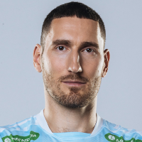
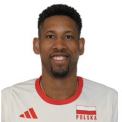
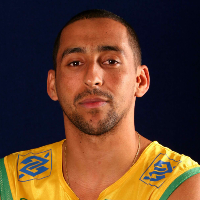

Opposite from Russia Maksim Mikhaylov is a top Russian volleyball player, known for his powerful attacks and key role in Russia’s 2012 Olympic gold victory.

Outside Hitter from Poland Wilfredo León is a star volleyball player for Poland, known for his explosive spikes and all-around skills. One of the world’s best, he’s a key force behind Poland’s international success.

Libero from Brazil Sergio Dutra Santos, known as Serginho, is a legendary Brazilian libero, celebrated for his exceptional defense. A two-time Olympic gold medalist, he is considered one of the greatest liberos in volleyball history.